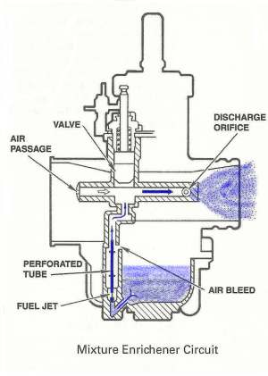
¶ A cold engine does not vaporize fuel well. Gasoline will ony burn when it is vaporized. Therefore, you have to put in a larger amount of raw gas then normal, so enough of it will vaporize. Then it will be able to burn and start the engine.
Mikuni Carburetors do this with a Mixture Enrichement Circuit. This circuit takes fuel from the float bowl, air from the front of the Carburetor and funnels it into the front of the Carburetor. For this Mixture Enrichment Circuit to work the Throttle Slide MUST be closed. This allows for a high vacuum to be present. If you open the throttle it lessens the vacuum considerably. This stops the Mixture Enrichement Circuit from working. The Mixture Enrichement Circuit is activated by a plunger.
Most Mixture Enrichement Circuits plungers are activated in one of three ways.
- Plunger Knob
- Plunger Lever
- Plunger Cable
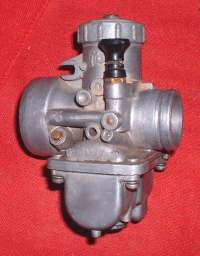 Plunger Knob Type |
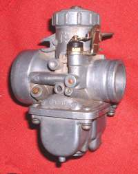 Plunger Lever Type |
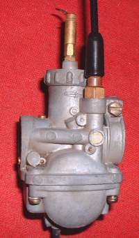 Plunger Cable Type |
The plunger is raised. Vacuum from the front of the Carburetor pulls air, from the rear of the Carburetor. It mixes that air with fuel coming through a small, pressed in, jet in the bottom of the Carburetor Float Bowl. The fuel goes from that jet through a passage in the Float Bowl. Flows up a tube and out the Plunger orifice. Then the fuel/air mixture goes through a passage to the front of the Carburetor and into the engine.
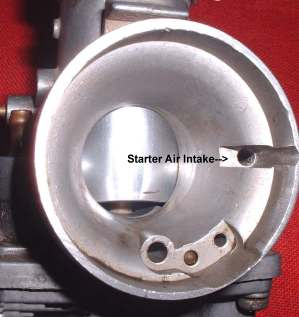 Starter Jet Intake |
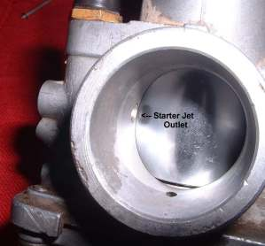 Starter Jet Outlet |
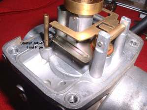 Starter Jet Fuel Pipe |
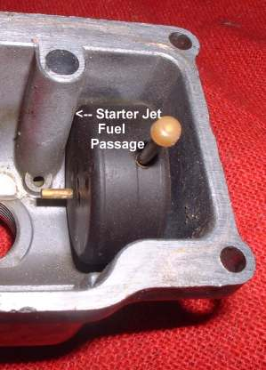 Starter Jet Fuel Passage |
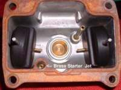 Brass Starter Jet |
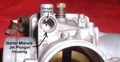 Starter Plunger orifice |
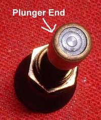 Starter Plunger |
Starter Plungers can be found on multi-cylinder engines too.
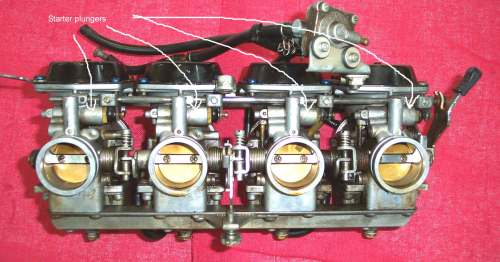
Other Carburetor Manufacturers use a different way of getting there. If you look closely you will see the Bing uses a cable operated, round piece of metal to do the same thing the plunger does. Cover and uncover the Starter Jet Port. One way or another they all end up at the same place. We have to have more gas going in to get a cold engine started.
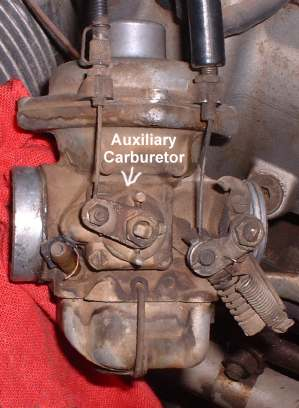 Bing Auxiliary Starter Carburetor |
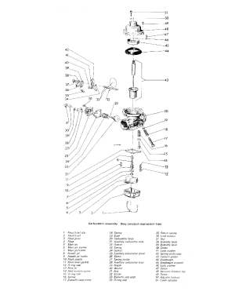 Bing Auxiliary Starter Carburetor |
Some Scooters have special electric Starter Plungers. Most are on Scooters. In the last 30 years I have had about, oh, maybe four or five scooters come in the shop. I am in the State of Idaho, USA. In some big cities or overseas they seem to be quite popular but not here. To learn more about them check your Scooter's shop manual.
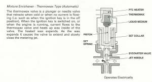 Mixture Enrichener Thermowax Type |
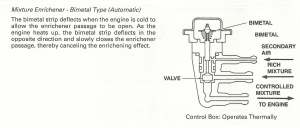 Mixture Enrichener Bimetal Type |
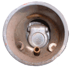
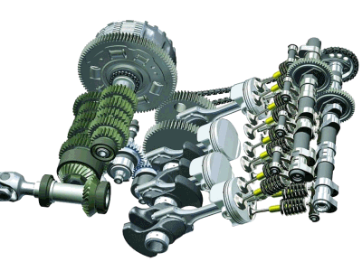 |
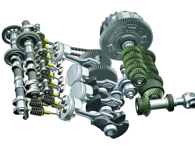 |
Copyright © 1999-2015 dansmc.com. All rights reserved.